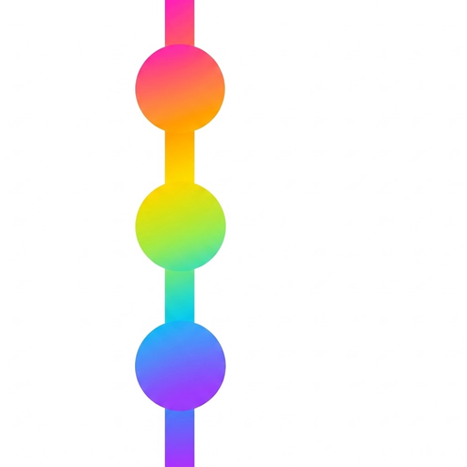

推しの年表アルバム
あの日のライブも、あの頃のビジュも。
バラバラだった推しの写真が、1本の年表でつながる。
- グループもメンバーも、ひとつの年表にグループ全体とメンバー個人のアルバムが、同じ時間の流れに並びます。
- 「何歳の時」「結成何年目」を自動で表示写真の日付から、その時の年齢や活動年数が分かります。
- 年表を1枚の画像に作った年表は画像として書き出して、SNSでシェアできます。
- ページごとにロック見せたくないページだけを、そっとロックできます。

推しの年表アルバム
あの日のライブも、あの頃のビジュも。
バラバラだった推しの写真が、1本の年表でつながる。